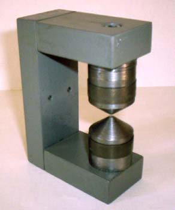
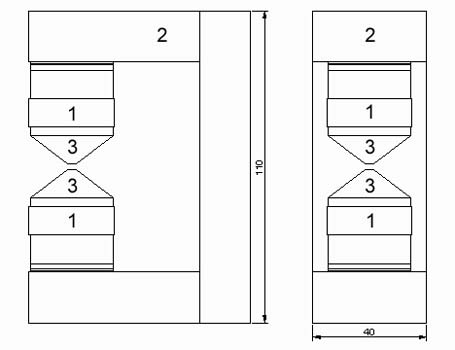
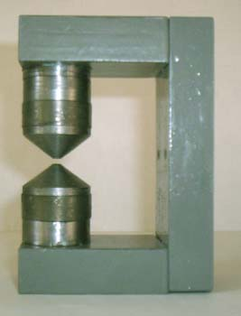
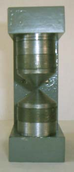
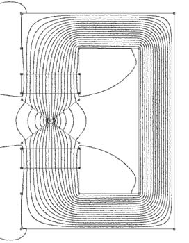
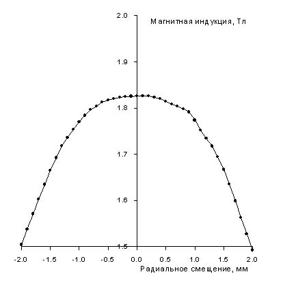

Магнитная система с индукцией до 2.5 Тл в зазоре между полюсами диаметром 3 мм

С помощью постоянных магнитов можно достаточно просто создавать магнитные поля, индукция которых достигает 2 ... 2.5 Тл и более [1, 5], особенно, если объем создаваемого поля невелик (не превышает несколько десятков кубических миллиметров). Такие поля могут пригодиться для проведения различных экспериментов, магнитных измерений и проверки датчиков магнитной индукции [7], а также для намагничивания малогабаритных постоянных магнитов [4] с коэрцитивной силой в сотни тысяч килоампер на метр, например, магнитопластов [3] на основе ферритов и редкоземельных металлов. Возможная конструкция подобной системы приведена на рис. 1. Важным ее достоинством является отсутствие потребления энергии при генерации магнитного поля.

Рис. 1. Конструкция системы на постоянных магнитах с магнитной индукцией в зазоре до 2.5 Тл: 1 - цилиндрические постоянные магниты (состав - неодим-железо-бор, намагниченность - вдоль оси), 2 - ярмо (малоуглеродистая сталь), 3 - полюсные наконечники (малоуглеродистая сталь или пермендюр).
Система состоит из двух постоянных цилиндрических магнитов состава неодим-железо-бор (1), намагниченных вдоль оси в установке импульсного намагничивания [9]. Магниты установлены внутри П-образного стального ярма (2), служащего для замыкания магнитного потока. К основаниям магнитов приклеены конусообразные полюсные наконечники из стали (3), позволяющие осуществлять концентрацию магнитного потока. Диаметр меньшего основания конуса 3 мм. Для изменения ширины зазора используются стальные прокладки между постоянным магнитом и ярмом. Внешний вид магнитной системы показан на рис. 2.


Рис. 2. Внешний вид магнитной системы (ширина рабочего зазора 2 мм).
Перед изготовлением магнитной системы был произведен расчет ее параметров методом конечных элементов [8] для постоянных магнитов состава неодим-железо-бор, обладающих следующими свойствами [6]: остаточная индукция 1.15 Тл, коэрцитивная сила по намагниченности 950 кА/м. Результаты представлены на рис. 3 и 4.

Рис. 3. Распределение магнитного поля в магнитной системе (расчет методом конечных элементов).

Рис. 4. Аксиальная составляющая магнитной индукции в центре зазора шириной 2 мм (расчет).
Измерения индукции магнитного поля реальной системы проводились с помощью тесламетра [7] с датчиком Холла типа ПХЭ [2] толщиной менее 1 мм. Результаты измерений достаточно хорошо согласуются с данными расчетов.
Характеристики реализованной магнитной системы приведены ниже:
Ссылки:
16.06.2009
Альтернативные источники
энергии
Компьютеры и
Интернет
Магнитные поля
Механотронные системы
Перспективные
разработки
Электроника и
технология